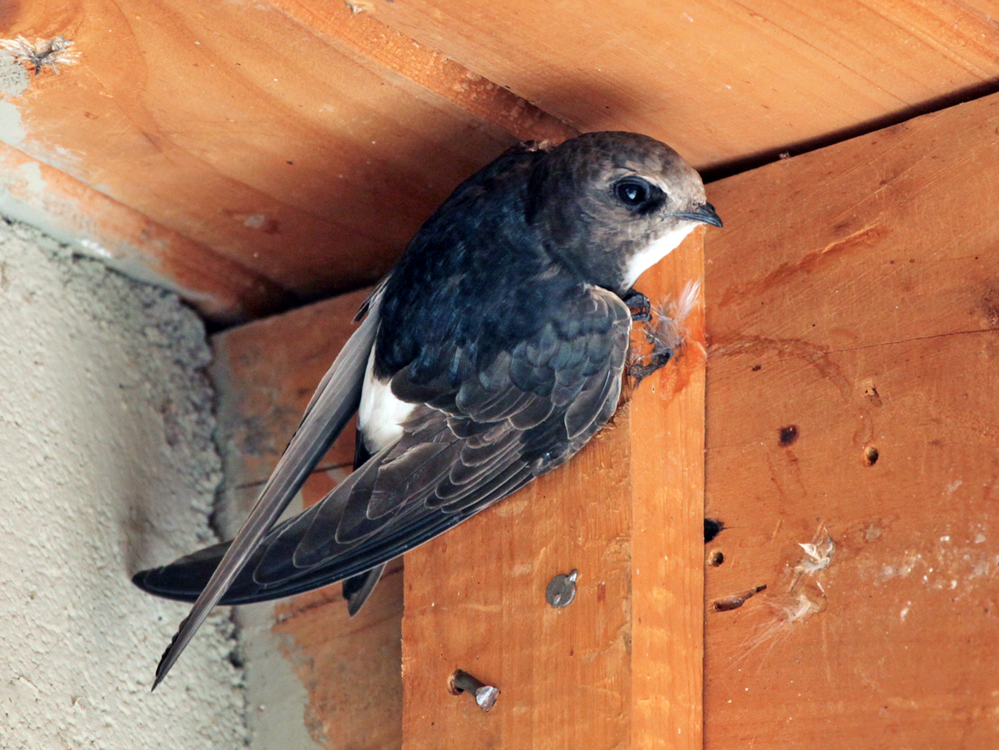

|  |
Swift belongs to a family of Apodidae of highly aerial birds. Treeswifts are closely related to
true swifts. This family is derived from Greek, which means footless. These are flying birds and are the fastest
fliers and flies about 169 km/h. Common swift can cover at least 200,000 km in a single year. Swift has large
ip bones.They have the flexibility of changing their angle between wingtip bones and forelimbs to alter the
shape and area by maximizing their efficiency and maneuverability. The birds even rotate their wings from the
They live on all continents, majorly on oceanic islands. They weigh from 5.4 g- 184 g and measure from 9cm-25cm
in length. The nests of these birds are glued to a vertical surface with saliva. Eggs hatch after
19-23 days and leave within six to eight weeks. Both parents incubate these birds.
|